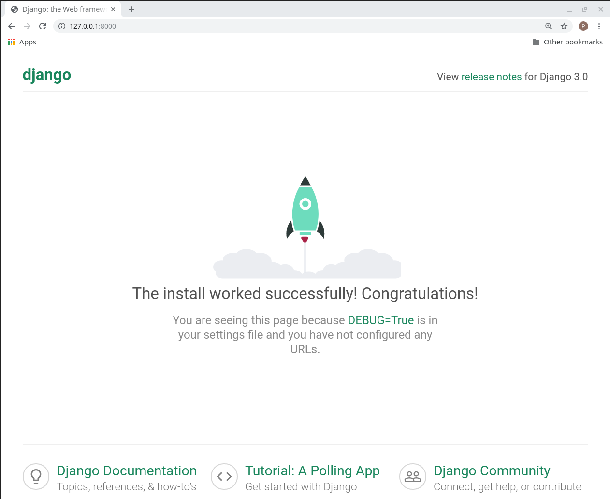
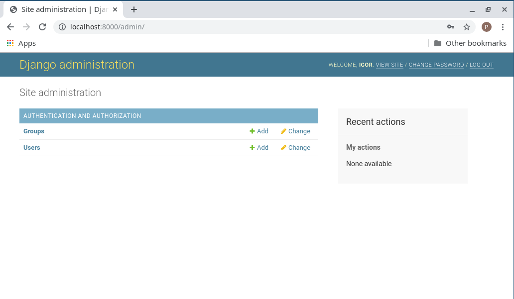
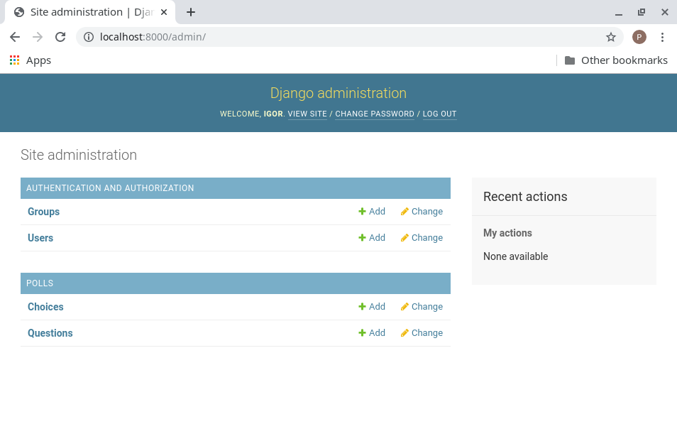

Kreirano 2023-01-16 Mon 18:19, pritisni ESC za mapu, m za meni, Ctrl+Shift+F za pretragu
$ pip install Django
Provera da li je instaliran:
$ python -m django --version
Preporuka: Koristiti virtualno okruženje
$ django-admin startproject mysite
Ovo će kreirati sledeće fajlove i foldere:
mysite/
manage.py
mysite/
__init__.py
settings.py
urls.py
wsgi.py
mysite/settings.py.sqlite3 baza što je sasvim dovoljno za razvoj....
# Database
# https://docs.djangoproject.com/en/3.0/ref/settings/#databases
DATABASES = {
'default': {
'ENGINE': 'django.db.backends.sqlite3',
'NAME': 'mydatabase'),
}
}
...
$ python manage.py runserver Watching for file changes with StatReloader Performing system checks... System check identified no issues (0 silenced). You have 17 unapplied migration(s). Your project may not work properly until you apply the migrations for app(s): admin, auth, contenttypes, sessions. Run 'python manage.py migrate' to apply them. December 04, 2019 - 19:20:25 Django version 3.0, using settings 'mysite.settings' Starting development server at http://127.0.0.1:8000/ Quit the server with CONTROL-C.

$ python manage.py migrate Operations to perform: Apply all migrations: admin, auth, contenttypes, sessions Running migrations: Applying contenttypes.0001_initial... OK Applying auth.0001_initial... OK Applying admin.0001_initial... OK Applying admin.0002_logentry_remove_auto_add... OK Applying admin.0003_logentry_add_action_flag_choices... OK Applying contenttypes.0002_remove_content_type_name... OK Applying auth.0002_alter_permission_name_max_length... OK Applying auth.0003_alter_user_email_max_length... OK Applying auth.0004_alter_user_username_opts... OK Applying auth.0005_alter_user_last_login_null... OK Applying auth.0006_require_contenttypes_0002... OK Applying auth.0007_alter_validators_add_error_messages... OK Applying auth.0008_alter_user_username_max_length... OK Applying auth.0009_alter_user_last_name_max_length... OK Applying auth.0010_alter_group_name_max_length... OK Applying auth.0011_update_proxy_permissions... OK Applying sessions.0001_initial... OK
Inicijalna šema potiče od podrazumevano uključenih aplikacija.
$ python manage.py createsuperuser Username (leave blank to use 'igor'): Email address: igord@uns.ac.rs Password: Password (again): Superuser created successfully.

$ python manage.py startapp polls
Kreira fajlove i foldere sledećeg oblika:
polls/
__init__.py
admin.py
apps.py
migrations/
__init__.py
models.py
tests.py
views.py
[app_name]/models.py fajlufrom django.db import models
class Question(models.Model):
question_text = models.CharField(max_length=200)
pub_date = models.DateTimeField('date published')
class Choice(models.Model):
question = models.ForeignKey(Question, on_delete=models.CASCADE)
choice_text = models.CharField(max_length=200)
votes = models.IntegerField(default=0)
PollsConfig iz fajla polls/apps.py u settings.py fajl za sajt, n-torka
INSTALLED_APPSINSTALLED_APPS = (
'polls.apps.PollsConfig',
'django.contrib.admin',
'django.contrib.auth',
'django.contrib.contenttypes',
'django.contrib.sessions',
'django.contrib.messages',
'django.contrib.staticfiles',
)
$ python manage.py makemigrations polls
Migrations for 'polls':
polls/migrations/0001_initial.py:
- Create model Choice
- Create model Question
Kreiran je fajl polls/migrations/0001_initial.py.
$ python manage.py sqlmigrate polls 0001
BEGIN;
--
-- Create model Choice
--
CREATE TABLE "polls_choice" (
"id" serial NOT NULL PRIMARY KEY,
"choice_text" varchar(200) NOT NULL,
"votes" integer NOT NULL
);
--
-- Create model Question
--
CREATE TABLE "polls_question" (
"id" serial NOT NULL PRIMARY KEY,
"question_text" varchar(200) NOT NULL,
"pub_date" timestamp with time zone NOT NULL
);
...
COMMIT;
$ python manage.py migrate Operations to perform: Apply all migrations: admin, auth, contenttypes, polls, sessions Running migrations: Applying polls.0001_initial... OK
Kod migracije šeme baze podataka uz očuvanje podataka raditi sledeće:
model.py$ python manage.py makemigrations
$ python manage.py migrate
polls/admin.py:from django.contrib import admin
from .models import Question, Choice
admin.site.register(Question)
admin.site.register(Choice)

$ python manage.py shell
>>> from polls.models import Question, Choice
>>> Question.objects.all()
[]
>>> from django.utils import timezone
>>> q = Question(question_text="What's new?", pub_date=timezone.now())
>>> q.save()
>>> q.id
1
>>> q.question_text
"What's new?"
>>> q.pub_date
datetime.datetime(2012, 2, 26, 13, 0, 0, 775217, tzinfo=<UTC>)
>>> q.question_text = "What's up?"
>>> q.save()
>>> Question.objects.all()
[<Question: Question object>]
from django.db import models
class Question(models.Model):
# ...
def __str__(self):
return self.question_text
class Choice(models.Model):
# ...
def __str__(self):
return self.choice_text
import datetime
from django.db import models
from django.utils import timezone
class Question(models.Model):
# ...
def was_published_recently(self):
return self.pub_date >= timezone.now() - datetime.timedelta(days=1)
>>> from polls.models import Question, Choice
>>> Question.objects.all()
[<Question: What's up?>]
>>> Question.objects.filter(id=1)
[<Question: What's up?>]
>>> Question.objects.filter(question_text__startswith='What')
[<Question: What's up?>]
>>> from django.utils import timezone
>>> current_year = timezone.now().year
>>> Question.objects.get(pub_date__year=current_year)
<Question: What's up?>
>>> Question.objects.get(id=2)
Traceback (most recent call last):
...
DoesNotExist: Question matching query does not exist.
>>> Question.objects.get(pk=1)
<Question: What's up?>
>>> q = Question.objects.get(pk=1)
>>> q.was_published_recently()
True
>>> q = Question.objects.get(pk=1)
>>> q.choice_set.all()
[]
>>> q.choice_set.create(choice_text='Not much', votes=0)
<Choice: Not much>
>>> q.choice_set.create(choice_text='The sky', votes=0)
<Choice: The sky>
>>> c = q.choice_set.create(choice_text='Just hacking again', votes=0)
>>> c.question
<Question: What's up?>
>>> q.choice_set.all()
[<Choice: Not much>, <Choice: The sky>, <Choice: Just hacking again>]
>>> q.choice_set.count()
3
>>> Choice.objects.filter(question__pub_date__year=current_year)
[<Choice: Not much>, <Choice: The sky>, <Choice: Just hacking again>]
>>> c = q.choice_set.filter(choice_text__startswith='Just hacking')
>>> c.delete()
polls aplikaciji imaćemo 4 pogleda:
Question index stranicuQuestion stranicu sa detaljimaQuestion stranicu sa rezultatima
Fajl polls/views.py:
from django.http import HttpResponse
def index(request):
return HttpResponse("Hello, world. You're at the polls index.")
Iz pogleda se vraća HttpResponse instanca ili izuzetak.
view funkciju posredstvom tzv.
URLconf-a.polls/urls.py sa sadržajem:from django.urls import path
from . import views
urlpatterns = [
path('', views.index, name='index'),
]
URLconf fajlu za sajt mysite/urls.py uključiti URLconf
aplikacije polls.from django.contrib import admin
from django.urls import include, path
urlpatterns = [
path('polls/', include('polls.urls')),
path('admin/', admin.site.urls),
]
Ako sada odete na adresu http://localhost:8000/polls/ dobićete string:
Hello, world. You’re at the polls index.
polls pogledi
Fajl polls/views.py:
def detail(request, question_id):
return HttpResponse("You're looking at question %s." % question_id)
def results(request, question_id):
response = "You're looking at the results of question %s."
return HttpResponse(response % question_id)
def vote(request, question_id):
return HttpResponse("You're voting on question %s." % question_id)
Fajl polls/urls.py:
from django.urls import path
from . import views
urlpatterns = [
# ex: /polls/
path('', views.index, name='index'),
# ex: /polls/5/
path('<int:question_id>/', views.detail, name='detail'),
# ex: /polls/5/results/
path('<int:question_id>/results/', views.results, name='results'),
# ex: /polls/5/vote/
path('<int:question_id>/vote/', views.vote, name='vote'),
]
Primer mapiranja:
/polls/34 => detail(request=<HttpRequest object>, question_id=34)
Fajl polls/views.py:
from django.http import HttpResponse
from polls.models import Question
def index(request):
latest_question_list = Question.objects.order_by('-pub_date')[:5]
output = ', '.join([p.question_text for p in latest_question_list])
return HttpResponse(output)
# Leave the rest of the views (detail, results, vote) unchanged
view funkciji.templates unutar polls aplikacije.
Konfiguracija za šablone je definisana u listi TEMPLATES u settings.py
modulu:
TEMPLATES = [
{
'BACKEND': 'django.template.backends.django.DjangoTemplates',
'APP_DIRS': True,
},
]
BACKEND podešavanje su:
django.template.backends.django.DjangoTemplatesdjango.template.backends.jinja2.Jinja2templates folderu kreiramo polls direktorijum i u njemu fajl
index.html.polls/templates/polls/index.htmlpolls/index.html
Fajl polls/templates/polls/index.html:
{% if latest_question_list %}
<ul>
{% for question in latest_question_list %}
<li><a href="/polls/{{ question.id }}/">
{{ question.question_text }}</a></li>
{% endfor %}
</ul>
{% else %}
<p>No polls are available.</p>
{% endif %}
Fajl polls/views.py:
from django.http import HttpResponse
from django.template import loader
from .models import Question
def index(request):
latest_question_list = Question.objects.order_by('-pub_date')[:5]
template = loader.get_template('polls/index.html')
context = {
'latest_question_list': latest_question_list,
}
return HttpResponse(template.render(context, request))
renderHttpResponse instance
je čest slučaj.render()
Fajl polls/views.py:
from django.shortcuts import render
from .models import Question
def index(request):
latest_question_list = Question.objects.order_by('-pub_date')[:5]
context = {'latest_question_list': latest_question_list}
return render(request, 'polls/index.html', context)
Recimo da želimo da renderujemo detalje Question objekta.
Fajl polls/views.py:
from django.http import Http404
from django.shortcuts import render
from .models import Question
# ...
def detail(request, question_id):
try:
question = Question.objects.get(pk=question_id)
except Question.DoesNotExist:
raise Http404("Question does not exist")
return render(request, 'polls/detail.html', {'question': question})
Za sada šablon polls/templates/polls/detail.html može biti prosto:
{{ question }}
get_object_or_404get_object_or_404().
Fajl polls/views.py:
from django.shortcuts import get_object_or_404, render
from polls.models import Question
# ...
def detail(request, question_id):
question = get_object_or_404(Question, pk=question_id)
return render(request, 'polls/detail.html', {'question': question})
get_list_or_404() koja koristi filter i podiže grešku 404
ukoliko je lista prazna.details šablona
Fajl polls/templates/polls/detail.html:
<h1>{{ question.question_text }}</h1>
<ul>
{% for choice in question.choice_set.all %}
<li>{{ choice.choice_text }}</li>
{% endfor %}
</ul>
index.html šablonu je bio delimično hardkodiran:<li>
<a href="/polls/{{ question.id }}/">{{ question.question_text}}</a>
</li>
{% url %} tag.<li><a href="{% url 'detail' question.id %}">
{{ question.question_text }}</a></li>
U polls.url modulu:
...
# the 'name' value as called by the {% url %} template tag
path('<int:question_id>/', views.detail, name='detail'),
...
url tag referencira rutu iz urls.py fajla po imenu.app_name u
urls.py modulu.
Fajl polls/urls.py:
from django.urls import path
from . import views
app_name = 'polls'
urlpatterns = [
path('', views.index, name='index'),
path('<int:question_id>/', views.detail, name='detail'),
path('<int:question_id>/results/', views.results, name='results'),
path('<int:question_id>/vote/', views.vote, name='vote'),
]
Fajl polls/templates/polls/index.html:
<li>
<a href="{% url 'polls:detail' question.id %}"> {{ question.question_text }}</a>
</li>
Šablon polls/templates/polls/detail.html:
<h1>{{ question.question_text }}</h1>
{% if error_message %}<p><strong>{{ error_message }}</strong></p>{% endif %}
<form action="{% url 'polls:vote' question.id %}" method="post">
{% csrf_token %}
{% for choice in question.choice_set.all %}
<input type="radio" name="choice" id="choice{{ forloop.counter }}" value="{{ choice.id }}">
<label for="choice{{ forloop.counter }}">{{ choice.choice_text }}</label><br>
{% endfor %}
<input type="submit" value="Vote">
</form>
Fajl polls/urls.py:
path('<int:question_id>/vote/', views.vote, name='vote'),
Fajl polls/views.py:
from django.http import HttpResponse, HttpResponseRedirect
from django.shortcuts import get_object_or_404, render
from django.urls import reverse
from .models import Choice, Question
# ...
def vote(request, question_id):
question = get_object_or_404(Question, pk=question_id)
try:
selected_choice = question.choice_set.get(pk=request.POST['choice'])
except (KeyError, Choice.DoesNotExist):
# Redisplay the question voting form.
return render(request, 'polls/detail.html', {
'question': question,
'error_message': "You didn't select a choice.",
})
else:
selected_choice.votes += 1
selected_choice.save()
# Always return an HttpResponseRedirect after successfully dealing
# with POST data. This prevents data from being posted twice if a
# user hits the Back button.
return HttpResponseRedirect(reverse('polls:results', args=(question.id,)))
Po uspešnom glasanju (POST forme) vrši se redirekcija na polls:results pogled.
Fajl polls/views.py:
from django.shortcuts import get_object_or_404, render
def results(request, question_id):
question = get_object_or_404(Question, pk=question_id)
return render(request, 'polls/results.html', {'question': question})
Šablon polls/templates/polls/results.html:
<h1>{{ question.question_text }}</h1>
<ul>
{% for choice in question.choice_set.all %}
<li>{{ choice.choice_text }} -- {{ choice.votes }} vote{{ choice.votes|pluralize }}</li>
{% endfor %}
</ul>
<a href="{% url 'polls:detail' question.id %}">Vote again?</a>
</ul>
from django.http import HttpResponse
def my_view(request):
if request.method == 'GET':
# <view logic>
return HttpResponse('result')
Postaje:
from django.http import HttpResponse
from django.views import View
class MyView(View):
def get(self, request):
# <view logic>
return HttpResponse('result')
Fajl urls.py:
from django.urls import path
from myapp.views import MyView
urlpatterns = [
path('about/', MyView.as_view()),
from django.http import HttpResponse
from django.views import View
class GreetingView(View):
greeting = "Good Day"
def get(self, request):
return HttpResponse(self.greeting)
class MorningGreetingView(GreetingView):
greeting = "Morning to ya"
Fajl urls.py:
urlpatterns = [
path('about/', GreetingView.as_view(greeting="G'day")),
]
from django.http import HttpResponseRedirect
from django.shortcuts import render
from .forms import MyForm
def myview(request):
if request.method == "POST":
form = MyForm(request.POST)
if form.is_valid():
# <process form cleaned data>
return HttpResponseRedirect('/success/')
else:
form = MyForm(initial={'key': 'value'})
return render(request, 'form_template.html', {'form': form})
Postaje:
from django.http import HttpResponseRedirect
from django.shortcuts import render
from django.views import View
from .forms import MyForm
class MyFormView(View):
form_class = MyForm
initial = {'key': 'value'}
template_name = 'form_template.html'
def get(self, request, *args, **kwargs):
form = self.form_class(initial=self.initial)
return render(request, self.template_name, {'form': form})
def post(self, request, *args, **kwargs):
form = self.form_class(request.POST)
if form.is_valid():
# <process form cleaned data>
return HttpResponseRedirect('/success/')
return render(request, self.template_name, {'form': form})
Fajl urls.py:
from django.contrib.auth.decorators import login_required, permission_required
from django.views.generic import TemplateView
from .views import VoteView
urlpatterns = [
path('about/', login_required(TemplateView.as_view(template_name="secret.html"))),
path('vote/', permission_required('polls.can_vote')(VoteView.as_view())),
]
Ili na nivou metoda klase:
from django.contrib.auth.decorators import login_required
from django.utils.decorators import method_decorator
from django.views.generic import TemplateView
class ProtectedView(TemplateView):
template_name = 'secret.html'
@method_decorator(login_required)
def dispatch(self, *args, **kwargs):
return super().dispatch(*args, **kwargs)
from django.urls import path
from books.views import BookListView
urlpatterns = [
path('books/', BookListView.as_view()),
]
from django.http import HttpResponse
from django.views.generic import ListView
from books.models import Book
class BookListView(ListView):
model = Book
def head(self, *args, **kwargs):
last_book = self.get_queryset().latest('publication_date')
response = HttpResponse()
# RFC 1123 date format
response['Last-Modified'] = \
last_book.publication_date.strftime('%a, %d %b %Y %H:%M:%S GMT')
return response
ListView i DetailsView.class Publisher(models.Model):
name = models.CharField(max_length=30)
address = models.CharField(max_length=50)
city = models.CharField(max_length=60)
state_province = models.CharField(max_length=30)
country = models.CharField(max_length=50)
website = models.URLField()
class Meta:
ordering = ["-name"]
def __str__(self):
return self.name
class Author(models.Model):
salutation = models.CharField(max_length=10)
name = models.CharField(max_length=200)
email = models.EmailField()
headshot = models.ImageField(upload_to='author_headshots')
def __str__(self):
return self.name
class Book(models.Model):
title = models.CharField(max_length=100)
authors = models.ManyToManyField('Author')
publisher = models.ForeignKey(Publisher, on_delete=models.CASCADE)
publication_date = models.DateField()
# views.py
from django.views.generic import ListView
from books.models import Publisher
class PublisherList(ListView):
model = Publisher
# urls.py
from django.urls import path
from books.views import PublisherList
urlpatterns = [
path('publishers/', PublisherList.as_view()),
]
template_name atribut klase pogleda Django će konstruisati
podrazumevano, u ovom slučaju books/publisher_list.html.
Fajl books/.html:
{% extends "base.html" %}
{% block content %}
<h2>Publishers</h2>
<ul>
{% for publisher in object_list %}
<li>{{ publisher.name }}</li>
{% endfor %}
</ul>
{% endblock %}
object_list. Bolje je učiniti ga
specifičnim za konkretan model.# views.py
from django.views.generic import ListView
from books.models import Publisher
class PublisherList(ListView):
model = Publisher
context_object_name = 'my_favorite_publishers'
Na primer, ako želimo da detaljni pregled izdavača sadrži i spisak knjiga:
from django.views.generic import DetailView
from books.models import Book, Publisher
class PublisherDetail(DetailView):
model = Publisher
def get_context_data(self, **kwargs):
# Call the base implementation first to get a context
context = super().get_context_data(**kwargs)
# Add in a QuerySet of all the books
context['book_list'] = Book.objects.all()
return context
Možemo da koristimo queryset atribut klase pogleda da definišemo proizvoljan upit.
from django.views.generic import DetailView
from books.models import Publisher
class PublisherDetail(DetailView):
context_object_name = 'publisher'
queryset = Publisher.objects.all()
from django.views.generic import ListView
from books.models import Book
class BookList(ListView):
queryset = Book.objects.order_by('-publication_date')
context_object_name = 'book_list'
from django.views.generic import ListView
from books.models import Book
class AcmeBookList(ListView):
context_object_name = 'book_list'
queryset = Book.objects.filter(publisher__name='ACME Publishing')
template_name = 'books/acme_list.html'
# views.py
from django.shortcuts import get_object_or_404
from django.views.generic import ListView
from books.models import Book, Publisher
class PublisherBookList(ListView):
template_name = 'books/books_by_publisher.html'
def get_queryset(self):
self.publisher = get_object_or_404(Publisher, name=self.kwargs['publisher'])
return Book.objects.filter(publisher=self.publisher)
from django.utils import timezone
from django.views.generic import DetailView
from books.models import Author
class AuthorDetailView(DetailView):
queryset = Author.objects.all()
def get_object(self):
obj = super().get_object()
# Record the last accessed date
obj.last_accessed = timezone.now()
obj.save()
return obj
{% extends "base_generic.html" %}
{% block title %}{{ section.title }}{% endblock %}
{% block content %}
<h1>{{ section.title }}</h1>
{% for story in story_list %}
<h2>
<a href="{{ story.get_absolute_url }}">
{{ story.headline|upper }}
</a>
</h2>
<p>{{ story.tease|truncatewords:"100" }}</p>
{% endfor %}
{% endblock %}
{{ varijabla }}.dot notacija za pristup atributima varijable pri čemu
je semantika sledeća:
Na kraju se pokušava pristup po numeričkom indeksu (deo iza tačke mora biti numerički)
Primer:
{{ my_dict.key }}
{{ my_object.attribute }}
{{ my_list.0 }}
Na prikaz varijable se može uticati filterima.
{{ value|default:"nothing" }}
Za value == None -- nothing
{{ value|length }}
Za value == [1, 2, 3] -- 3
{{ value|filesizeformat }}
Za value == 123456789 -- 117.7 MB
Filteri se mogu povezivati:
{{ text|escape|linebreaks }}
Mogu imati parametre:
{{ bio|truncatewords:30 }}
{{ list|join:", " }}
Složenije konstrukcije oblika:
{% tag %} ... sadržaj... {% endtag %}
Služe za implementaciju kontrole toke (petlji, uslova), učitavanje eksternih informacija i sl.
For<ul>
{% for athlete in athlete_list %}
<li>{{ athlete.name }}</li>
{% endfor %}
</ul>
If, elif i else{% if athlete_list %}
Number of athletes: {{ athlete_list|length }}
{% elif athlete_in_locker_room_list %}
Athletes should be out of the locker room soon!
{% else %}
No athletes.
{% endif %}
{% if athlete_list|length > 1 %}
Team: {% for athlete in athlete_list %} ... {% endfor %}
{% else %}
Athlete: {{ athlete_list.0.name }}
{% endif %}
<!DOCTYPE html>
<html lang="en">
<head>
<link rel="stylesheet" href="style.css" />
<title>{% block title %}My amazing site{% endblock %}</title>
</head>
<body>
<div id="sidebar">
{% block sidebar %}
<ul>
<li><a href="/">Home</a></li>
<li><a href="/blog/">Blog</a></li>
</ul>
{% endblock %}
</div>
<div id="content">
{% block content %}{% endblock %}
</div>
</body>
</html>
{% extends "base.html" %}
{% block title %}My amazing blog{% endblock %}
{% block content %}
{% for entry in blog_entries %}
<h2>{{ entry.title }}</h2>
<p>{{ entry.body }}</p>
{% endfor %}
{% endblock %}
block tagovi treba da imaju podrazumevani sadržaj.{{
block.super }}.endblock opciono može definisati ime što je zgodno kod većih šablona.{% block content %}
...
{% endblock content %}
< se konvertuje u <> se konvertuje u >' (jednostruki navodnici) se konvertuju u '" (dvostruki navodnici) se konvertuju u "& se konvertuje u &This will be escaped: {{ data }}
This will not be escaped: {{ data|safe }}
Za data vrednost <b> rezultuje sledećim kodom:
This will be escaped: <b>
This will not be escaped: <b>
{% autoescape off %}
Hello {{ name }}
{% endautoescape %}
Auto-escaping is on by default. Hello {{ name }}
{% autoescape off %}
This will not be auto-escaped: {{ data }}.
Nor this: {{ other_data }}
{% autoescape on %}
Auto-escaping applies again: {{ name }}
{% endautoescape %}
{% endautoescape %}
{% for comment in task.comment_set.all %}
{{ comment }}
{% endfor %}
{{ task.comment_set.all.count }}
Moguće je pozivati i korisničke metode.
class Task(models.Model):
def foo(self):
return "bar"
{{ task.foo }}
load.{% load humanize %}
{{ 45000|intcomma }}
django.contrib.humanize mora biti omogućena u
konfiguraciji INSTALLED_APPS.{% load humanize i18n %}